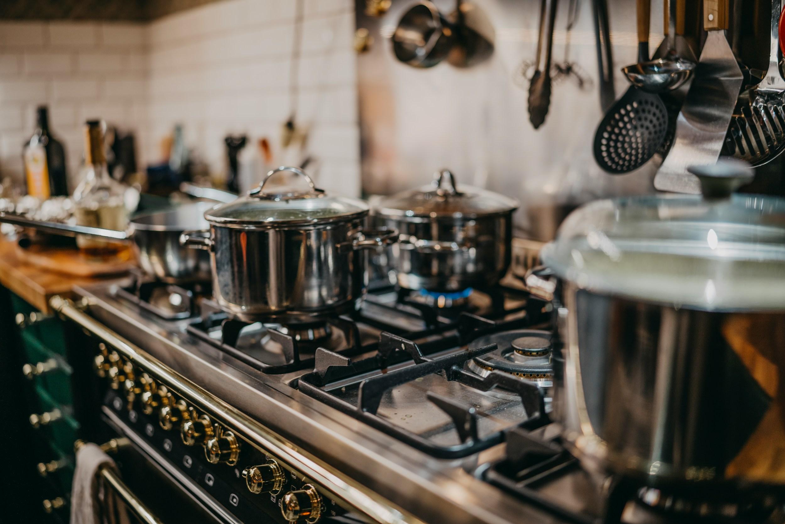

Sua cozinha inteligente. Sua família protegida.
Controle seu gás com monitoramento em tempo real, alertas de vazamento e desligamento remoto pensado para residências conectadas.

Inovação, tecnologia e segurança
Três pilares guiam a SmartGás: prevenir acidentes, simplificar o controle do botijão e aproximar tecnologia da rotina doméstica.
Tecnologia
Sensores, automação e conectividade Wi-Fi trabalham juntos para monitorar o ambiente e o consumo do gás.
Inovação
Um kit IoT compacto transforma o fogão tradicional em uma solução inteligente, acessível e prática.
Segurança
Alertas e desligamento automático ajudam a reduzir riscos em situações de vazamento ou esquecimento.
Transformar a cozinha tradicional em um ambiente inteligente e seguro.
A SmartGás combina hardware, sensores e aplicativo para prevenir acidentes, permitir desligamento remoto e temporizado, além de enviar alertas sobre o nível do botijão.
Monitoramento, automação e resposta rápida em um único sistema.
O kit identifica vazamentos, mede o nível do botijão e atua fisicamente no fogão para ampliar a segurança sem exigir troca completa da estrutura da cozinha.
O que o sistema entrega
Funções pensadas para proteger a família e deixar o controle do gás mais claro no dia a dia.
Detecção inteligente de vazamento
Sensor de gás acompanha o ambiente e dispara alertas quando identifica indícios de vazamento.
Controle inteligente do fogão
Atuador permite desligamento automático, remoto ou temporizado conforme o cenário de uso.
Nível do botijão em tempo real
Célula de carga estima o peso do botijão e ajuda o usuário a se planejar antes do gás acabar.
Dúvidas comuns sobre a SmartGás
Respostas organizadas a partir dos cartões originais do projeto.
Sim. O sistema usa sensor de gás para identificar alterações no ambiente e emitir alertas de segurança.
A ideia nasceu da preocupação com acidentes domésticos provocados por vazamento de gás de cozinha, uma situação comum em residências brasileiras e quase sempre percebida tarde demais.
Famílias, estudantes que moram sozinhos, pequenos restaurantes e qualquer cozinha que use botijão de GLP e precise de um monitoramento simples e acessível.
O protótipo está em desenvolvimento e deve passar por validações com sensores, atuadores e aplicativo.
Alerta sonoro e visual imediato, fechamento automático do registro pelo servo motor e acompanhamento do ambiente pelo aplicativo, tudo com componentes de baixo custo.
Além de avisar, o SmartGás age: o ESP32 interrompe o fornecimento de gás sozinho e envia o estado do ambiente para o aplicativo, sem depender de alguém estar em casa.